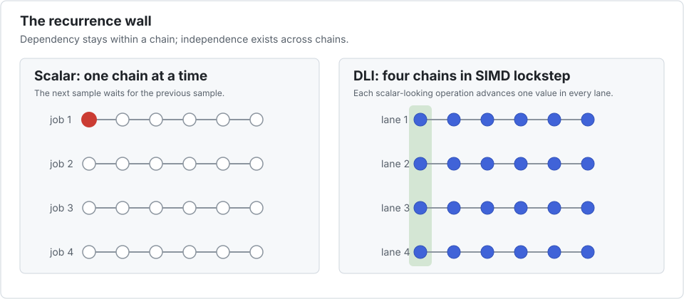

Thomas tridiagonal systems
The Thomas algorithm solves a tridiagonal system in linear time. It is compact, cache friendly, and intrinsically sequential inside one system: each row in the forward elimination depends on the preceding row, and back substitution has the reverse dependency.

Interleave leaves both sweeps intact. Lane 1 solves system 1, lane 2 solves system 2, and so on. At row i, one vector operation advances the same row of P unrelated systems.
The benchmark
bench/thomas.jl solves 65,536 systems of length 64. Five arrays hold the solution, diagonal, upper diagonal, lower diagonal, and right-hand side. A scratch vector is allocated once and reused. The benchmark also includes a global-SoA alternative that transposes the loops explicitly: row i outside, all systems inside.
The arithmetic estimate is eight operations per unknown. The LLVM SIMD column is a structural check from code_llvm; it confirms that packet runs contain <P x float>.
| configuration | time | estimated GFlop/s | speedup vs scalar | LLVM SIMD |
|---|---|---|---|---|
| scalar reference | 29.71 ms | 1.1 | 1.00× | — |
| global SoA rewrite | 8.19 ms | 4.1 | 3.63× | compiler-controlled |
P=1 | 29.95 ms | 1.1 | 0.99× | — |
P=2 | 14.88 ms | 2.3 | 2.00× | yes |
P=4 | 7.48 ms | 4.5 | 3.97× | yes |
P=8 | 4.09 ms | 8.2 | 7.27× | yes |
P=16 | 2.18 ms | 15.4 | 13.60× | yes |
P=32 | 1.53 ms | 21.9 | 19.38× | yes |
P=32 is eight times wider than one native NEON Float32 vector. It wins sequentially because a wide packet gives the processor several independent vector instructions with which to hide division and recurrence latency. P=64 was also tried: it no longer improved this case and its native assembly contained vector stack traffic. Packet size is therefore a measured latency-hiding/unrolling parameter, not a spelling of the register width.
With explicit task parallelism
| configuration | time | estimated GFlop/s | speedup vs scalar | speedup vs threaded P=1 |
|---|---|---|---|---|
P=1, 10 threads | 4.66 ms | 7.2 | 6.38× | 1.00× |
P=2, 10 threads | 2.41 ms | 13.9 | 12.34× | 1.94× |
P=4, 10 threads | 1.32 ms | 25.4 | 22.53× | 3.53× |
P=8, 10 threads | 0.95 ms | 35.2 | 31.19× | 4.89× |
P=16, 10 threads | 0.85 ms | 39.4 | 34.88× | 5.47× |
P=32, 10 threads | 0.89 ms | 37.8 | 33.50× | 5.25× |
The packed and threaded gains do not multiply: five arrays stream through memory and the 10-thread run approaches a shared bandwidth limit. This also changes the optimum from sequential P=32 to threaded P=16; an autotuner must include the execution mode in its key.
Competing approaches
The measured global-SoA rewrite is the most direct competitor: its 3.63× gain proves that a compiler-friendly inner loop across all systems can recover some SIMD. It also requires a different algorithmic source, keeps consecutive recurrence rows nbatch scalars apart, and streams the whole population before advancing one row. DLI completes one small packet of systems at a time, keeps adjacent recurrence states nearby, and reaches 19.38× without transposing the kernel. This is a workload result, not a theorem: global SoA may win when a later stage already consumes that layout or when its long inner loop is especially efficient.
LinearAlgebra.Tridiagonalis the idiomatic first choice for one system and provides a specialised solver. It does not itself express SIMD across thousands of independent systems.@simdis not a legal fix for the forward or backward sweep: Julia defines it as a promise that iterations may be reordered.LoopVectorization.@turbolikewise assumed independent iterations. Both are excellent when that premise is true — it simply is not, here.- A hand-written
SIMD.jlkernel can perform the same cross-system vectorization with maximum control. The price is explicit loads, stores, tails, and a second vector-specific kernel. Interleave usesSIMD.jlas its element type while retaining the scalar source. - Parallel cyclic reduction changes the numerical algorithm to expose parallelism within a system. NVIDIA's cuSPARSE batched tridiagonal routines provide strided and interleaved layouts and use CR/PCR on a GPU. This is a stronger option for a large device-resident batch, but it has different hardware, transfer, algorithmic, and floating-point-order trade-offs.
Parity with Legolas++
The same 4,096-by-64 Thomas workload was compiled from the sibling Legolas++ checkout and run against Julia in interleaved A/B rounds. C++ used -O3, the flags from its benchmark, and -ffp-contract=off; disabling contraction matters because the Julia exactness contract does not silently replace multiply-then-subtract with FMA.
| packet | Julia | Legolas++ | Julia / C++ time |
|---|---|---|---|
| 1 | 1.840 ms | 1.755 ms | 1.05× |
| 4 | 0.459 ms | 0.435 ms | 1.06× |
| 8 | 0.254 ms | 0.248 ms | 1.03× |
| 16 | 0.135 ms | 0.134 ms | 1.01× |
| 32 | 0.0838 ms | 0.0833 ms | 1.006× |
Generated code explains the close result: both implementations use one NEON group at P=4, two at P=8, four at P=16, and eight at P=32; neither implementation showed vector stack spills through P=32. The audit driver is bench/legolas_cpp_vectorization_audit.cxx. This is encouraging evidence that the Julia representation can match Legolas++, while still falling short of a universal guarantee across kernels, compilers, and CPUs.
Choose Interleave when the Thomas sweep is part of a larger custom CPU kernel and many similarly sized systems are already available together. Choose a domain or vendor routine when its exact primitive, stability behaviour, and data placement match the application better.
For a complete implementation walkthrough, continue with Tutorial 1.